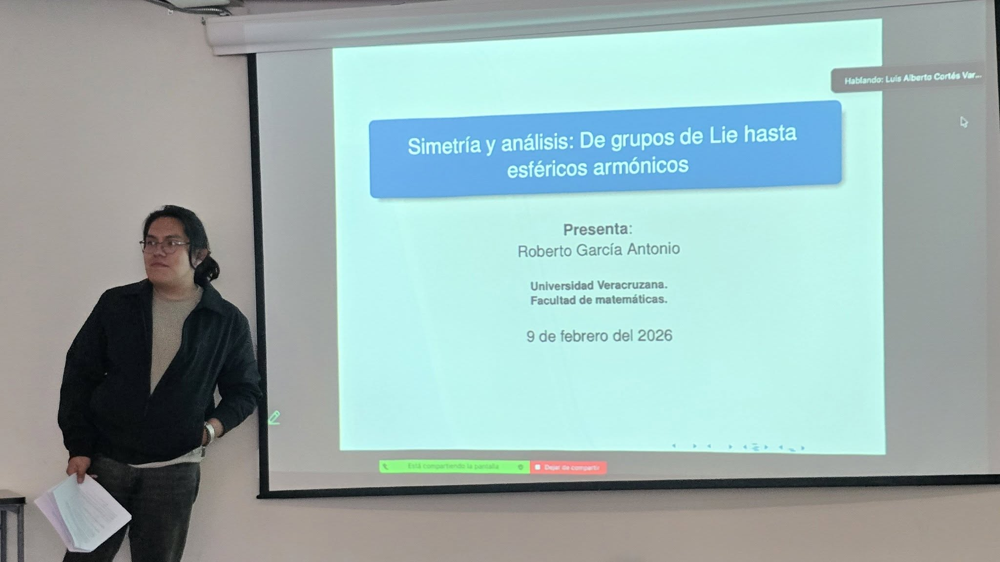

Biography & Research Interests
I am a Mathematician with a Master's degree from the Universidad Veracruzana. My primary research interests lie in Functional Analysis(operator theory), Lie Theory, global analysis and Harmonic Analysis(representation theory), geometruc group theory, Coarser geometry.
Currently, I am expanding my research into applied fields, specifically Machine Learning (ML) and Data Science, looking for intersections between rigorous mathematical analysis and statistical learning theory.
Documents
Thesis
Activities
Teaching
Teaching
| Subject | School |
|---|---|
| Topology | Universidad Veracruzana |
Courses
Animations
Personal Data
Tools: LaTeX, SQL, Excel, Python (Pandas, Scikit-Learn, numpy), R.